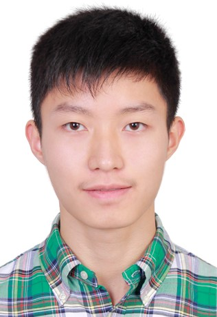
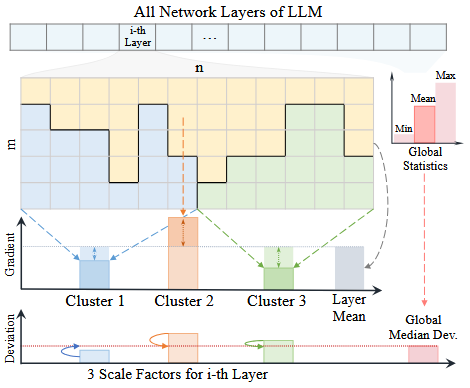
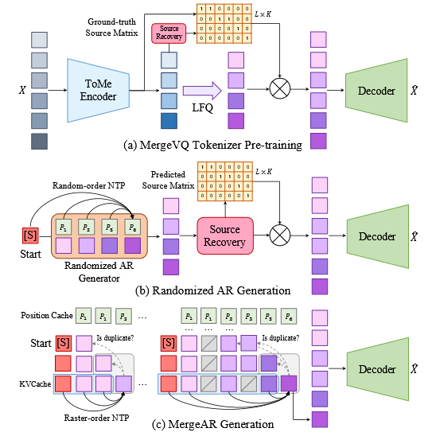
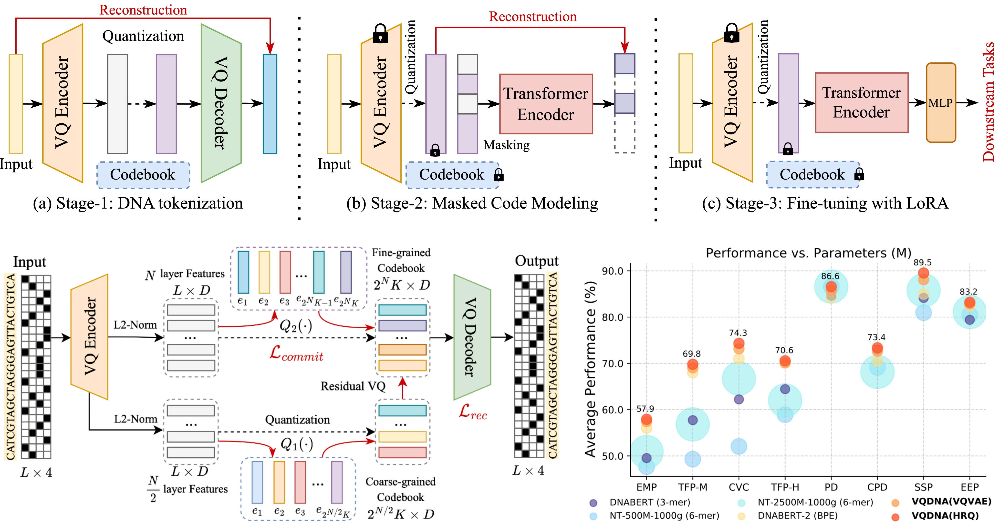
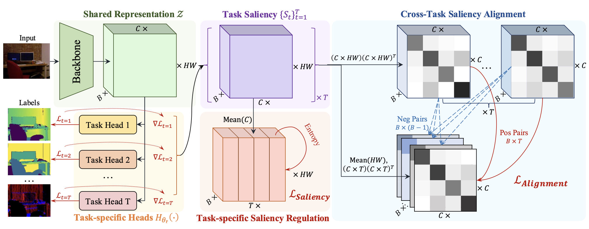
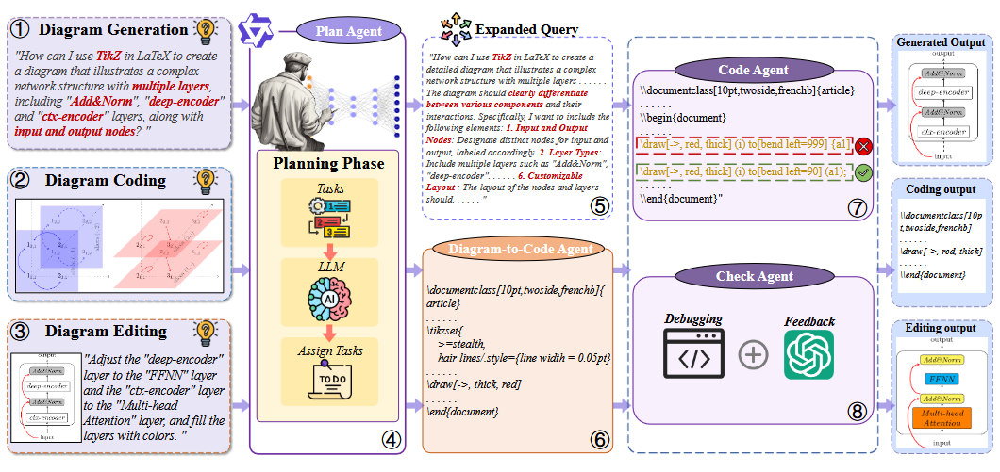

|  | Siyuan Li (李思远) |
News
- [2025.06] One paper on Multi-task learning, RepMTL, is accepted by ICCV 2025, congrats to Zedong Wang.
- [2025.05] One paper on LLM Optimization, SGG, is accepted by ACL 2025 (main).
- [2025.04] Two co-authored paper on MLLM and AI4Science are accepted by IJCAI 2025, congrats to Cheng Tan and Bozhen Hu.
- [2025.03] One paper on Generation & Representation, MergeVQ, is accepted by CVPR 2025.
- [2025.03] Two co-authored paper on AIGC are accepted by CVPR 2025, congrats to Yufei Huang and Jingxuan Wei.
- [2025.01] Three co-authored paper on AI4Science are accepted by ICLR 2025, congrats to Di Wu, Cheng Tan, and Yufei Huang.
- [2024.12] Two co-authored paper on Low-level vision are accepted by AAAI 2025, congrats to Xiongfei Su.
- [2024.09] Four co-authored paper on AI4Science and Face recognition are accepted by NeurIPS 2024, congrats to Fang Wu, Chengrui Duan, Zhangyang Gao, and Jun Dan.
- [2024.08] One paper on GNN theory, GNN Bottleneck, is accepted by TKDE 2024, congrats to Fang Wu.
- [2024.07] Co-authored paper on CoT reasoning, MC-CoT, is accepted by ECCV 2024, congrats to Cheng Tan.
- [2024.06] Co-authored paper on Neuro-science, NeuroBERT, is accepted by JBHI 2024, congrats to Di Wu.
- [2024.05] One paper on genomics, VQDNA, is accepted by ICML 2024.
- [2024.05] Three co-authored paper on Long-sequence (CHELA) and AI4Science are accepted by ICML 2024, congrats to Zicheng Liu, Lirong Wu, and Yufei Huang.
- [2024.04] Co-authored paper on Long-sequence model, LongVQ, is accepted by IJCAI 2024, congrats to Zicheng Liu.
- [2024.01] One paper on semi-supervised learning, SemiReward, is accepted by ICLR 2024.
- [2024.01] One paper on vision architecture, MogaNet, is accepted by ICLR 2024.
- [2024.01] Three co-authored paper on AI4Science are accepted by ICLR 2024 (MAPE-PPI wins Spotlight), congrats to Lirong Wu, Zhangyang Gao, and Cheng Tan.
- [2023.12] Two co-authored paper on protein and video are accepted by AAAI 2024, congrats to Yufei Huang and Xuesong Nie.
- [2023.10] One paper on self-supervised learning, GenURL, is accepted by TNNLS 2023.
- [2023.09] One paper on video prediction, OpenSTL, is accepted by NeurIPS 2023.
- [2023.09] One paper on data augmentation, Decoupled Mixup, is accepted by NeurIPS 2023.
- [2023.09] Two co-authored paper on AI4Science are accepted by NeurIPS 2023, congrats to Haitao Lin and Jun Xia.
- [2023.06] Build an open-source toolbox, OpenSTL, for spatio-temporal predictive learning based on PyTorch and update on arXiv (OpenSTL). On updating!
- [2023.06] One paper on label noise, GNN-Cleaner, is accepted by TKDE 2023, congrats to Jun Xia.
- [2023.04] One paper on self-supervised learning, A2MIM, is accepted by ICML 2023.
- [2023.04] Co-authored paper on GNN explanation, MatchExplainer, is accepted by ICML 2023, congrats to Fang Wu.
- [2023.03] Co-authored paper on sign language, CVT-SLR, is accepted by CVPR 2023 (Highlight), congrats to Zheng Jiangbin.
- [2023.03] Co-authored paper on video prediction, TAU, is accepted by CVPR 2023, congrats to Cheng Tan.
- [2023.01] Co-authored paper on molecular graph pre-training, Mole-BERT, is accepted by ICLR 2023, congrats to Jun Xia.
- [2022.09] One paper on fine-grained self-supervised learning, CVSA, is accepted by BMVC 2022 (Spotlight).
- [2022.09] Co-authored paper on domain adaptation, DaC, is accepted by NeurIPS 2022, congrats to Ziyi Zhang.
- [2022.09] Co-authored paper on graph representation, DMAGE, is accepted by Neurocomputing 2022, congrats to Zelin Zang.
- [2022.08] Co-authored paper on graph attack, AtkSE, is accepted by CIKM 2022, congrats to Zihan Liu.
- [2022.07] One paper on data augmentation, AutoMix, is accepted by ECCV 2022 (Oral).
- [2022.07] One paper on self-supervised learning, DLME, is accepted by ECCV 2022.
- [2022.01] Build an open-source toolbox, OpenBioSeq, for supervised and self-supervised bio-sequence representation learning based on PyTorch. On updating!
- [2022.03] Co-authored paper on semi-supervised learning, HCR, is accepted by CVPR 2022, congrats to Cheng Tan.
- [2022.01] Build an open-source toolbox, OpenMixup, for supervised, self- and semi-supervised visual representation learning based on PyTorch. On updating!
- [2021.10] Co-authored paper on deep clustering, GCML, is accepted by WACV 2022, congrats to Lirong Wu.
- [2021.07] Got my B.S. degree from Nanjing University!
- [2021.06] One paper on invertible learning, inv-ML, is accepted by ECML-PKDD 2021.
- [2020.05] One paper on visual object tracking, TLPG-Tracker, is accepted by IJCAI 2020.
Research Interest
Currently, I focus on Self-supervised Learning and Data-efficient Deep Learning:- Self-supervised Learning in Computer Vision and Bioengineering
- Network Architecture and Long-sequence Modeling
- General Data Augmentation
- Semi-supervised Learning
Education
- 2021.09-2026.06 Ph.D at Zhejiang University & Westlake University. Supervisor: Prof. Stan Z. Li
- 2017.09-2021.06 B.Sc. at Nanjing University. Supervisor: Prof. Jianxing Wu
Internship
- 2024.12-2025.12 Research on AI4Science at BioMap Research, supervised by Researcher Qirong Yang.
- 2023.07-2024.08 Research on AIGC at Alibaba DAMO Academy, supervised by Researcher Baigui Sun.
Publications
Selected Preprints:
 |
Unveiling the Backbone-Optimizer Coupling Bias in Visual Representation Learning |
Conferences (As First Author):
|  |
Taming LLMs by Scaling Learning Rates with Gradient Grouping |
|  |
MergeVQ: A Unified Framework for Visual Generation and Representation with Disentangled Token Merging and Quantization |
|  |
VQDNA: Unleashing the Power of Vector Quantization for Multi-Species Genomic Sequence Modeling |
 |
SemiReward: A General Reward Model for Semi-supervised Learning |
 |
MogaNet: Efficient Multi-order Gated Aggregation Network |
 |
OpenSTL: A Comprehensive Benchmark of Spatio-Temporal Predictive Learning |
 |
Harnessing Hard Mixed Samples with Decoupled Regularizer |
 |
Architecture-Agnostic Masked Image Modeling -- From ViT back to CNN |
 |
Exploring Localization for Self-supervised Fine-grained Contrastive Learning |
 |
AutoMix: Unveiling the Power of Mixup for Stronger Classifiers |
 |
DLME: Deep Local-flatness Manifold Embedding |
 |
Invertible Manifold Learning for Dimension Reduction |
 |
TLPG-Tracker: Joint Learning of Target Localization and Proposal Generation for Visual Tracking |
Conferences (As Co-author):
|  |
Rep-MTL: Unleashing the Power of Representation-level Task Saliency for Multi-Task Learning |
|  |
From Words to Structured Visuals: A Benchmark and Framework for Text-to-Diagram Generation and Editing |
|
|
Towards Homogeneous Lexical Tone Decoding from Heterogeneous Intracranial Recordings |
|
|
Prior-guided Hierarchical Harmonization Network for Efficient Image Dehazing |
|
|
Instructor-inspired Machine Learning for Robust Molecular Property Prediction |
|
|
PhyloGen: Language Model-Enhanced Phylogenetic Inference via Graph Structure Generation |
|
|
TopoFR: A Closer Look at Topology Alignment on Face Recognition |
|
|
Boosting the Power of Small Multimodal Reasoning Models to Match Larger Models with Self-Consistency Training |
|
|
Short-Long Convolutions Help Hardware-Efficient Linear Attention to Focus on Long Sequences |
|
|
Re-Dock: Towards Flexible and Realistic Molecular Docking with Diffusion Bridge |
|
|
Learning to Predict Mutation Effects of Protein-Protein Interactions by Microenvironment-aware Hierarchical Prompt Learning |
|
|
LongVQ: Long Sequence Modeling with Vector Quantization on Structured Memory |
|
|
MAPE-PPI: Towards Effective and Efficient Protein-Protein Interaction Prediction via Microenvironment-Aware Protein Embedding |
|
|
Hierarchical Data-efficient Representation Learning for Tertiary Structure-based RNA Design |
|
|
KW-Design: Pushing the Limit of Protein Deign via Knowledge Refinement |
|
|
Protein 3D Graph Structure Learning for Robust Structure-based Protein Property Prediction |
|
|
Wavelet-Driven Spatiotemporal Predictive Learning: Bridging Frequency and Time Variations |
 |
Functional-Group-Based Diffusion for Pocket-Specific Molecule Generation and Elaboration |
 |
Explaining Graph Neural Networks via Non-parametric Subgraph Matching |
 |
CVT-SLR: Contrastive Visual-Textual Transformation for Sign Language Recognition with Variational Alignment |
 |
Temporal attention unit: Towards efficient spatiotemporal predictive learning |
 |
Mole-BERT: Rethinking Pre-training Graph Neural Networks for Molecules |
 |
Divide and Contrast: Source-free Domain Adaptation via Adaptive Contrastive Learning |
 |
Are Gradients on Graph Structure Reliable in Gray-box Attacks? |
 |
Hyperspherical Consistency Regularization |
 |
Generalized Clustering and Multi-Manifold Learning with Geometric Structure Preservation |
Journals:
 |
GenURL: A General Framework for Unsupervised Representation Learning |
|
|
Discovering the Representation Bottleneck of Graph Neural Networks |
|
|
Neuro-BERT: Rethinking Masked Autoencoding for Self-Supervised Neurological Pretraining |
 |
GNN Cleaner: Label Cleaner for Graph-structured Data |
 |
Deep Manifold Attributed Graph Embedding |
Services
Membership:
- IEEE Membership, Graduate Student Member, 2022.01-present
- IEEE Young Professionals, 2022.01-present
- China Society of Image and Graphics (CSIG), Student Member, 2023-2026
- China Computer Federation (CCF), Student Member, 2024-2026
- Association for Computational Linguistics (ACL) Membership, Student Member, 2025-2026
- British Machine Vision Association (BMVA), Student Member, 2024-present
Invited Talk:
- 2024/03/27: Talk on "Modern Convolutional Neural Networks" @ Chengdu Institute of Computer Application, Chinese Academy of Sciences [PPT]
- 2024/03/12: Talk on "Convolution Kernel Design and Gated Attention for Modern Convolutional Neural Networks" @ ShuZiHuanYu Platform [Video] [PPT]
- 2023/12/14: Talk on "Mixup Data Augmentation for Computer Vision" @ Chongqing Technology and Business University [PPT]
- 2023/12/14: Talk on "Introduction to AI Research and Experience Sharing" @ Chongqing Technology and Business University
Program Committee Member | Reviewer:
- Conference Reviewer / PC Member: International Conference on Learning Representations (ICLR), 2024-2025
- Journal Reviewer: IEEE Transactions on Pattern Analysis and Machine Intelligence (TPAMI)
International Conference on Machine Learning (ICML), 2022-2025
Conference and Workshop on Neural Information Processing Systems (NeurIPS), 2022-2025
Dataset and Benchmark Track on Neural Information Processing Systems (NeurIPS DB Track), 2023-2024
IEEE Conference on Computer Vision and Pattern Recognition (CVPR), 2022-2025
International Conference on Computer Vision (ICCV), 2023-2025
Conference on European Conference on Computer Vision (ECCV), 2022-2024
AAAI Conference on Artificial Intelligence (AAAI), 2022-2026
International Joint Conference on Artificial Intelligence (IJCAI), 2023-2025
ACM Multimedia (ACMMM), 2022-2025
IEEE Conference on Multimedia Expo (ICME), 2024
International Conference on Artificial Intelligence and Statistics (AISTATS), 2025
British Machine Vision Conference (BMVC), 2024-2025
Asian Conference on Computer Vision (ACCV), 2024
IEEE Winter Conference on Applications of Computer Vision (WACV), 2022-2025
International Journal of Computer Vision (IJCV)
IEEE Transactions on Neural Networks and Learning Systems (TNNLS)
IEEE Transactions on Circuits and Systems for Video Technology (TCSVT)
Neural Computing & Applications (NCA)
Electronic Research Archive (ERA)
Teaching Assistant:
- Deep Learning Course, Westlake University, 2024.03-2024.06
Online Project:
- OpenMixup: Open mixup toolbox and benchmark for visual representation learning [Code]
- OpenSTL: Open-source project for video prediction benchmarks [Code]
- Awesome-MIM: Masked Modeling for Self-supervised Representation Learning on Vision and Beyond [Code]
- Awesome-Mixup: Awesome List of Mixup Augmentation and Beyond [Code]
Social Awards:
- 2025: CVPR2025 Broadening Participation Participant Award
- 2024: Westlake University Suwu Scholarship (2024)
- 2024: ICML2024 Scholarship (Financial Aid Awardees)
- 2024: ICLR2024 Scholarship (Financial Assistance Awardees)
- 2023: ICML2023 Participation Grant